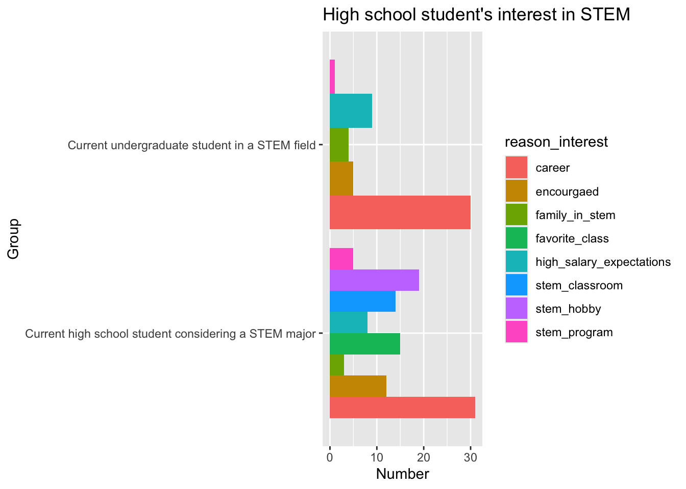
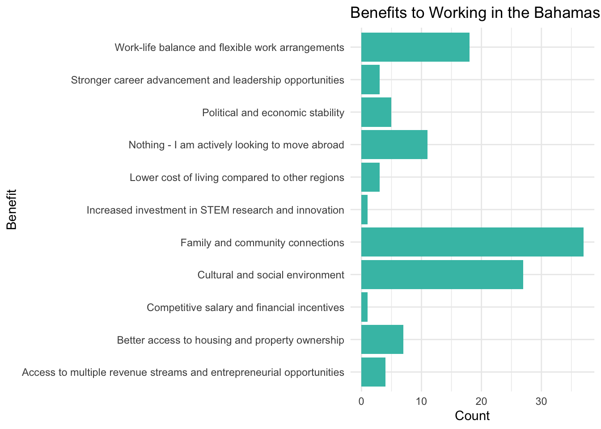
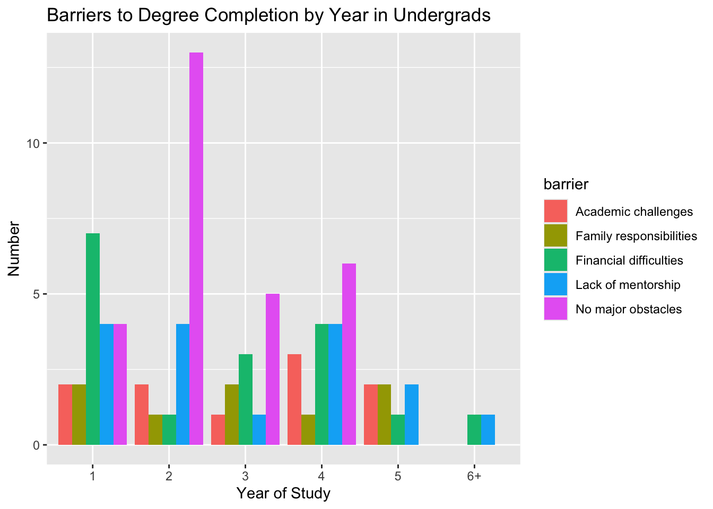

Bahamian STEM Survey
Demographic Summary
There were 242 participants.
identity | n |
|---|---|
Current high school student considering a STEM major | 58 |
Current undergraduate student in a STEM field | 53 |
Graduate of an undergraduate STEM program | 118 |
STEM Professional without an undergraduate STEM degree | 13 |
1. Where are current Bahamian college students in STEM and STEM adjacent fields?
Majors
The most popular majors in current college students are engineering, biological sciences, and physical sciences (which were primarily composed of student pursuing studies in marine sciences).
Location
Most current undergraduate students are in the Bahamas. Note: survey design flaw here. Did not ask where students were attending uni Some might’ve interpreted this as where they study.
Years
Most students are taking the normal amount of time to complete their degrees.
2. Did participants have any interaction with a pre-college or summer program that piqued their interest in a STEM pr STEM adjacent field?

3. Where are Bahamian STEM professionals? What are the factors that contribute to their location?
Location
Graduates of STEM degrees are mostly in the US. Some in Canada
Factors contributing or working against working in the Bahamas
The primary draw to working in the Bahamas is closeness to family and cultural reasons. The primary detriment is low salary.

Salaries
Many STEM professionals are in the Bahamas and being paid at the lowest end of the salary range (below 50K). Only those that work in the US reach the higher end (200K+).
The median salaries of US and Canada were $50,909 and $45,714. The median salary of the Bahamas was not able to be estimated as the majority of participants responded that they made less tha 50K/ year.
4. Where do Bahamians that study or have studied in STEM fields come from in the Bahamas?
Most participants that study or have studied (not high school students) come from New Providence (62%). New Providence was 73% of the population in 2022, so this number is not dissimilar to the demographics of the Bahamas (NP is not overrepresented).
More participants from public schools come from the out islands.
Most participants interested in STEM come from private schools.
5. Do Bahamians that have studied in STEM fields end up working in their fields?
Most who studied are able to use their degrees. Lower proportion in the Bahamas than the US or Canada. Excluded our single UK participant here for brevity.
6. Do salary expectations for Bahamians that are currently studying in STEM fields meet reality in their desired work location?
Health professions and egineering had highest expectations for salary. How do these compare to reality? Compare to salaries of professionals in question 3.
- How do Undergrad’s perceptions of their degree change over time? (Challenges to completion)
Financial difficulties more common in first year.
